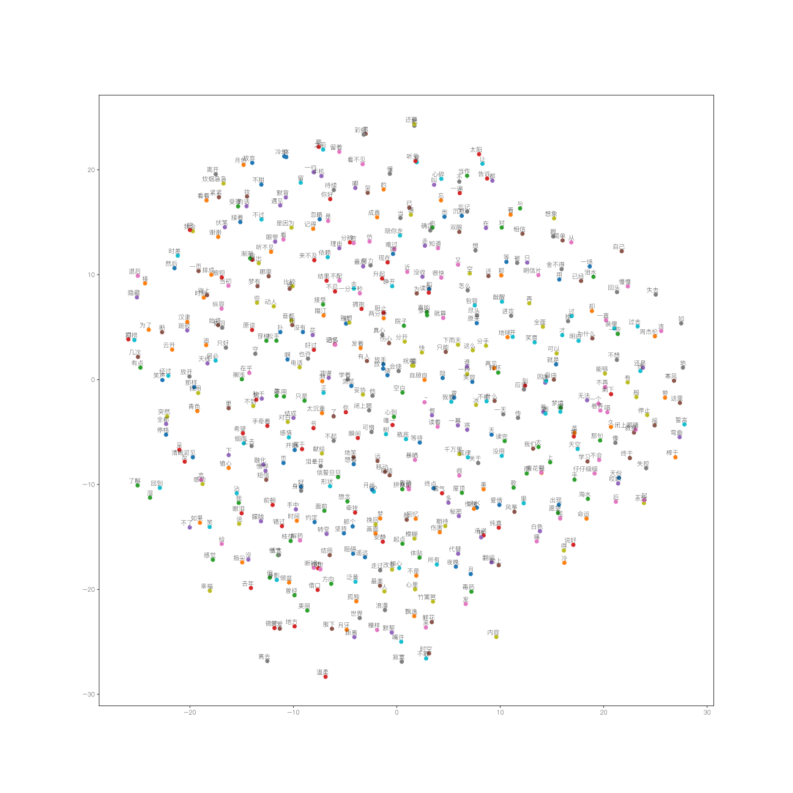

前言
最近一直在看TensorFlow的东西，也不知道怎么做才好，借着TF的word2vec的例子，我来分析一下周杰伦所唱的歌。
准备
首先，我准备了周杰伦唱过的歌的歌词，你可以在这里周杰伦唱过的歌下载这个例子。当然你有更好的例子的话，欢迎联系本弱
根据TF官方的数据，其给的是一个英文的分词表，所以移花接木的，这里可以使用中文分词工具jieba来处理歌词的分词。
|
|
这里的words是用于记录分词后的周杰伦的歌词的一个列表。
创建一个字典来方便检索数据
这里根据TF的入门指导，选择字典来检索数据，并且为后面skip-gram 模型的生成提供指导。
|
|
这里使用collection这个高效的容器来检索前600个出现次数最多的词，并且检索出来。然后将检索的前600个字编号。
创建一个索引数组，遍历原始数据中的列表，如果当前遍历对象是600个字中的一员，那么对应索引数组中的成员就赋予600个字的标号，如果不是，程序就会认为其是不可识别的，将其指向未知这个字符（UNK）的标号（应该是0），遍历结束后，补充上更新后的不可识别的字符。这样数据就转换成了一个带有索引编号的数组，一个字符计数的字典，一个标号的字典以及其反式字典。
然后删除掉原始数据，以便节省内存空间。
建立skip-gram模型
什么是skip-gram模型？
和词袋模型相反，skip-gram是通过从一个文字来预测的上下文。
其实, 用一个向量唯一标识一个word已经提出有一段时间了. Tomáš Mikolov的word2vec算法的一个不同之处在于, 他把一个word映射到高维(50到300维), 并且在这个维度上有了很多有意思的语言学特性, 比如单词”Rome”的表达vec(‘Rome’), 可以是vec(‘Paris’) – vec(‘France’) + vec(‘Italy’)的计算结果.
向量空间模型 (VSMs)将词汇表达（嵌套）于一个连续的向量空间中，语义近似的词汇被映射为相邻的数据点。向量空间模型在自然语言处理领域中有着漫长且丰富的历史，不过几乎所有利用这一模型的方法都依赖于 分布式假设，其核心思想为出现于上下文情景中的词汇都有相类似的语义。采用这一假设的研究方法大致分为以下两类：基于技术的方法 (e.g. 潜在语义分析)， 和 预测方法 (e.g. 神经概率化语言模型).
如何建立一个skip-gram模型？
建议直接参考TensorFlow中文教程
the quick brown fox jumped over the lazy dog
我们首先对一些单词以及它们的上下文环境建立一个数据集。我们可以以任何合理的方式定义‘上下文’，而通常上这个方式是根据文字的句法语境的（使用语法原理的方式处理当前目标单词可以看一下这篇文献 Levy et al.，比如说把目标单词左边的内容当做一个‘上下文’，或者以目标单词右边的内容，等等。现在我们把目标单词的左右单词视作一个上下文， 使用大小为1的窗口，这样就得到这样一个由(上下文, 目标单词) 组成的数据集：
([the, brown], quick), ([quick, fox], brown), ([brown, jumped], fox), ...
前文提到Skip-Gram模型是把目标单词和上下文颠倒过来，所以在这个问题中，举个例子，就是用'quick'来预测 'the' 和 'brown' ，用 'brown' 预测 'quick' 和 'brown' 。因此这个数据集就变成由(输入, 输出)组成的：
(quick, the), (quick, brown), (brown, quick), (brown, fox), ...
目标函数通常是对整个数据集建立的，但是本问题中要对每一个样本（或者是一个batch_size 很小的样本集，通常设置为16 <= batch_size <= 512）在同一时间执行特别的操作，称之为随机梯度下降 SGD。我们来看一下训练过程中每一步的执行。
假设用 t 表示上面这个例子中quick 来预测 the 的训练的单个循环。用 num_noise 定义从噪声分布中挑选出来的噪声（相反的）单词的个数，通常使用一元分布，P(w)。为了简单起见，我们就定num_noise=1，用sheep选作噪声词。接下来就可以计算每一对观察值和噪声值的损失函数了。
构建针对skip-gram的数据集
skip-gram模型可以理解为每次从一个长度为[skipWindow...,target,skipWindow... ]的样本中找出位于两端的元素和目标输出构成的一个(输出,输入)的一个样本。
|
|
在这个函数之中，batchSize指的是每次选择的样本的数量，而numSkip指的则是每次target和周围词的复用率，dataIndex作为一个全局变量则是起到一个类似于指针的作用。
代码在初始化的时候，初始化了定形状的batch和label矩阵，接着，代码将会从当前dataIndex取2 * skipWinnow + 1个长度为2 * skipWinnow + 1压进一个长度为双端队列。接着根据指示其就会选出target周围的numSkip个词，接着索引指向下一个字符，继续操作。直至选出batchSize个样本出来。batch是选出的输出词，而label则是输入词。
开始skip-gram的训练
预设定条件之后，就可以开始skip-gram的训练了。
|
|
首先使用了两个占位符，其主要作为batch和label所feed的对象。由于我们没有GPU配置（渣电脑是AMD的显卡，哈哈哈）。然后建立了一个形状为[vocabularySize, embeddingSize]的一个嵌套的矩阵。我们用唯一的随机值来初始化这个大矩阵。
然后我们需要对批数据中的单词建立嵌套向量，TensorFlow提供了方便的工具函数。也就是tf.nn.embedding_lookup
对噪声-比对的损失计算就使用一个逻辑回归模型。对此，我们需要对语料库中的每个单词定义一个权重值（weight）和偏差值（baise）。(也可称之为输出权重 与之对应的 输入嵌套值)。

所以说word2vec是只有一个隐层的全连接神经网络, 用来预测给定单词的关联度大的单词.WI 的大小是VxN, V是单词字典的大小, 每次输入是一个单词, N是你设定的隐层大小.
对于整个数据集，当梯度下降的过程中不断地更新参数，对应产生的效果就是不断地移动每个单词的嵌套向量，直到可以把真实单词和噪声单词很好得区分开。所以这里使用的是NCE函数。
|
|
训练模型
训练的过程很简单，只要在循环中使用feed_dict不断给占位符填充数据，同时调用session.run即可。
|
|
结果
还是很尴尬的。。。

展望
可以利用这个为之后的seq2seq模型的建立提供支持
所有的代码下载
点击这里
Note : 可能有乱码哦～